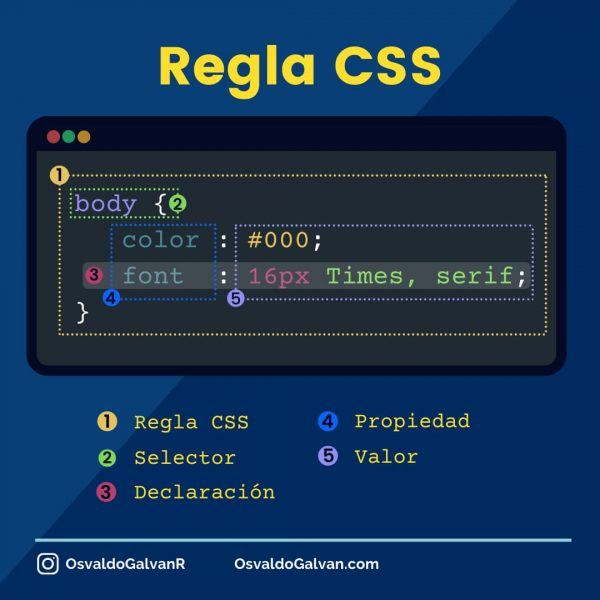
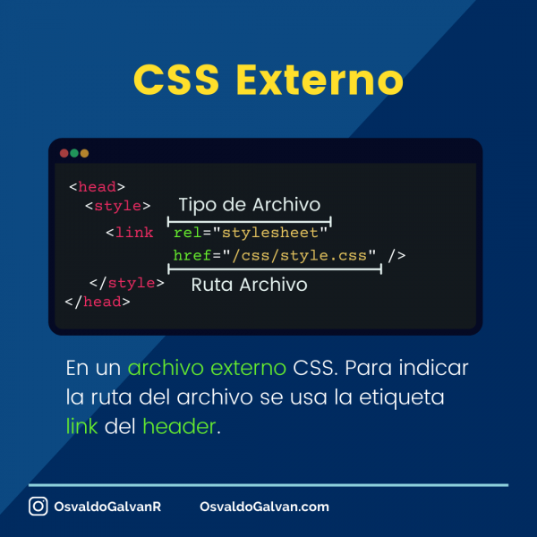
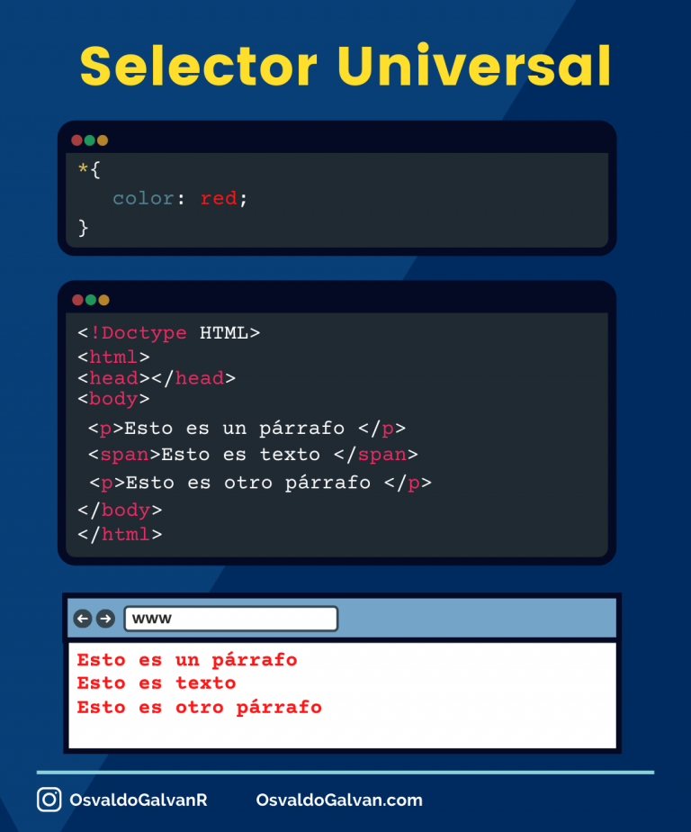
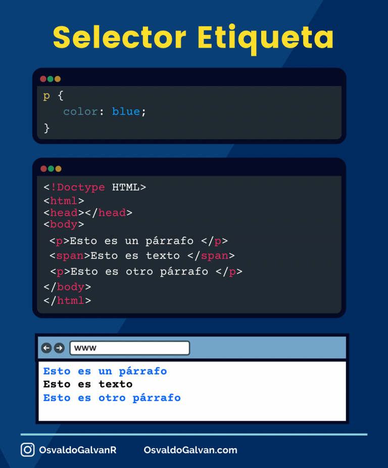
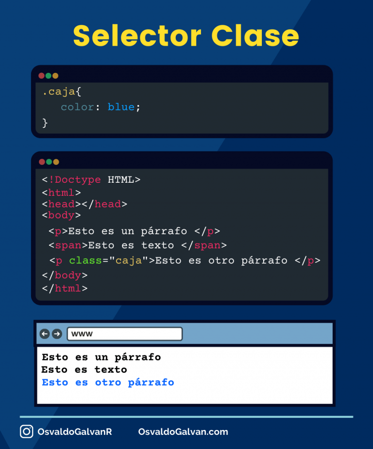
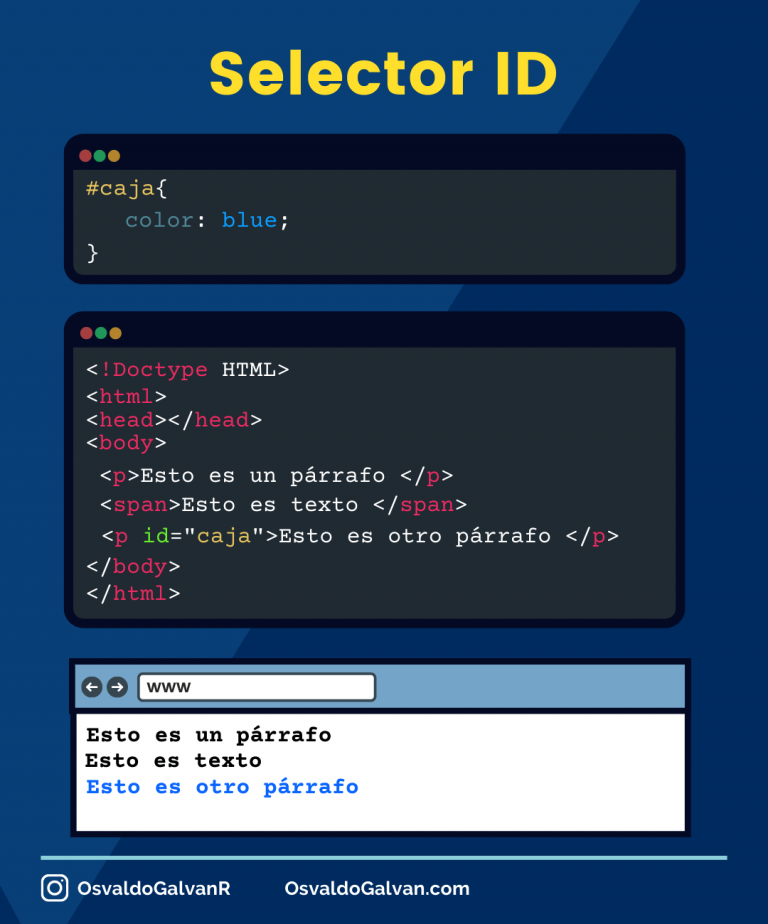
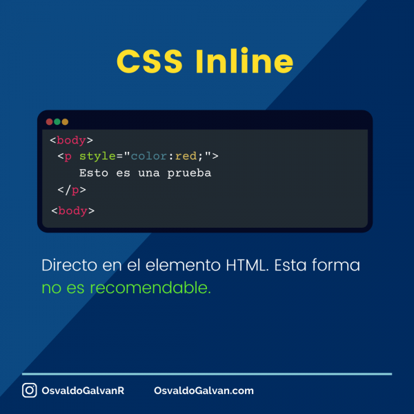
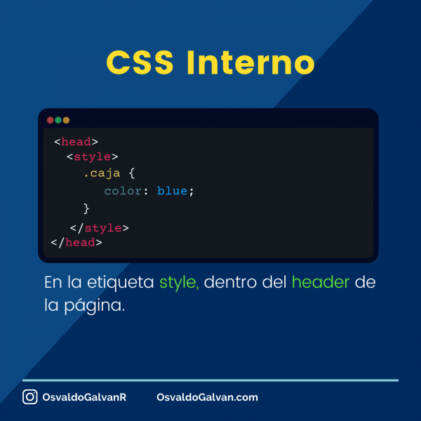

¿Cómo funciona CSS?
CSS utiliza una sintaxis basada en reglas. Cada regla se compone de un selector, una o varias declaraciones, una declaración es una combinación de propiedades y valores.
Los Selectores ayudan a conectar las etiquetas HTML con los estilos definidos en la regla.
Una Declaración se forma de una propiedad y un valor. Las declaraciones de una regla se definen entre “{}” separadas por “;”.
Las propiedades son los estilos que se desean modificar, como son: las fuentes, el color, el tamaño, el margen, el borde, el fondo entre otros.
A cada propiedad se le asigna un valor, por ejemplo: azul, verde, 25px, entre otros.
El valor que se pueden asignar a una propiedad depende de esta. Es decir, no puedo asignar el valor blue a la propiedad font-size, pero si puedo aplicarle el valor 25px.
Un valor blue aplica solo a las propiedades que aceptan colores, por ejemplo: background o color.
¿Cuál es la sintaxis de una regla CSS?
La siguiente imagen describe una regla CSS y cada uno de sus elementos.

Tipos de selectores CSS.
Como se mencionó previamente, los Selectores establecen una relación entre las reglas de CSS y los elementos HTML de nuestro documento.
En CSS básico para HTML, existen diferentes tipos de selectores, y dependiendo del selector usado en la regla, esta podrá aplicar a uno o más elementos HTML.
Estos no son todos selectores existentes, adicionalmente tenemos otros selectores avanzados, pero para CSS básico para HTML esto son elementales.
Los selectores más habituales y sencillos de usar son el selector universal, de etiqueta, descendente, de clase y de ID.

Selector universal (*).
Aplica a todos los elementos HTML, este selector es poco usado porque aplica el mismo estilo a todos los elementos del documento.
A pesar de eso, el selector universal comúnmente se usa en combinación de otros sectores.
El selector universal se indica con un asterisco (*). La regla CSS del selector universal es la siguiente.

Selector de etiqueta.
Con este selector podemos aplicar estilos a todos los elementos que coincidan con la misma etiqueta.
El uso de este selector es igual de sencillo que el universal, solo se requiere especificar la etiqueta a la cual se quiere aplicar el estilo, y el navegador se encargará de aplicarlo.
Para usar este selector solo se debe indicar el nombre de la etiqueta y definir los estilos que apliquen, por ejemplo.

Selector de clase.
Todos los elementos HTML tienen un atributo class. Este atributo se usa para especificar el nombre de la clase que se usará para afectar los estilos del elemento.
Los selectores de clase buscan los elementos HTML que tengan cierto valor en el atributo class.
Los selectores de clase son los más usados.
Una clase se puede aplicar a uno o más elementos HTML. Es decir, las reglas CSS con selectores de clase pueden ser reutilizados en varios elementos HTML haciendo más sencilla la declaración de estilos.
La regla CSS del selector inicia con un punto (.) y el nombre de la clase, por ejemplo.

De igual forma, se puede asignar más de una clase a un elemento HTML. Para lo cual se requiere escribir el nombre de las clases separados por un espacio en blanco dentro del atributo class del elemento.
Selector de ID.
Los selectores de ID aplican un estilo a un solo elemento del documento HTML. El selector ID permite seleccionar un elemento único a través del atributo id.
Los ID Deben ser únicos por cada documento HTML, es decir, de esta forma solo se podrá aplicar el estilo a un único elemento en todo el documento.
La regla CSS del selector ID inicia con el signo de # seguida del nombre de ID, por ejemplo.

¿Cómo podemos implementar estilos a HTML?
Podemos implementar los estilos CSS a nuestro HTML de tres diferentes formas:
Css Online
Se pueden aplicar estilos directamente a las etiquetas HTML. Esto se logra usando el atributo style de nuestro elemento HTML. Este método se conoce por el nombre de online.

Esta es la forma menos recomendable de aplicar estilos a una etiqueta HTML. Ya que tendríamos que estilizar de forma individual cada componente de nuestro documento.
Css Interno
Podemos aplicar estilos usando la etiquete style contenida dentro del headerde nuestro documento. Este método se conoce por el nombre estilos internos.

Aplicando los estilos dentro de la etiqueta style de nuestro HTML, podemos tener nuestro HTML con sus respectivos estilos en el mismo documento. Sin embargo, no podemos usar esos estilos en otro documento, para eso tendríamos que copiar y pegar los estilos en otro documento HTML.
Los estos internos, se podrían usar cuando el elemento HTML que se desea estilizar solo existe en ese documento HTML.
Css Externo
Por último, este es el método más recomendable por buenas prácticas, nos referimos al método externo. Como su nombre lo dice, hace uso de fuente externas, es decir, de uno varios archivos CSS.
Para ligar un archivo CSS con nuestro documento HTML hacemos uso de la etiqueta link dentro del header de la página.
¿Y qué sigue?
Ahora que ya conoces CSS básico para HTML solo basta continuar con la práctica del lenguaje CSS.
En un principio CSS te resultará un poco desafiante complicado pero con la práctica constante podrás maquetar sitios web de forma impresiónate.